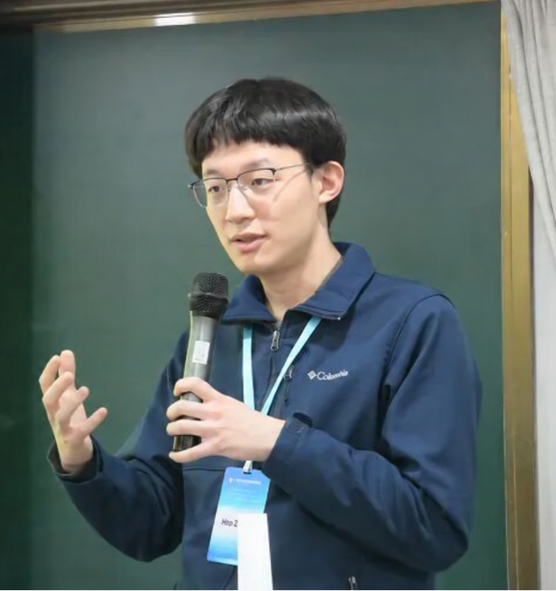

From 2026.09
Assistant Professor
Beijing Institute of Mathematical Sciences and Applications (BIMSA)
Theoretical Physics · String Theory
I am a theoretical physicist working on string theory and quantum field theory, focusing on their (generalized) symmetries, anomalies, and other geometric / topological aspects.
Assistant Professor, Beijing Institute of Mathematical Sciences and Applications (BIMSA)
From 2026.09Postdoctoral Fellow, Kavli Institute for the Physics and Mathematics of the Universe (Kavli IPMU), University of Tokyo
2023.10 — 2026.08

BIMSA
01
Academic appointments and education.
From 2026.09
Beijing Institute of Mathematical Sciences and Applications (BIMSA)
2023.10 — 2026.08
Kavli Institute for the Physics and Mathematics of the Universe, University of Tokyo
2018.08 — 2023.08
University of Pennsylvania · Advisor: Mirjam Cvetič · Co-advisor: Jonathan J. Heckman
2014.09 — 2018.07
School of Physics, Peking University
02
Selected themes and recent publications.
Saghar S. Hosseini, Yuji Tachikawa, Hao Y. Zhang
arXiv:2505.07933 · Commun. Math. Phys. 407 (2026) 191
Xingyang Yu, Hao Y. Zhang
arXiv:2504.05374 · SciPost Phys. 19 (2025) 154
Yuji Tachikawa, Hao Y. Zhang
arXiv:2403.08861 · SciPost Phys. 17 (2024) 077
Justin Kaidi, Yuji Tachikawa, Hao Y. Zhang
arXiv:2402.00105 · SciPost Phys. 17 (2024) 169
Craig Lawrie, Xingyang Yu, Hao Y. Zhang
arXiv:2306.11783 · Phys. Rev. D 109 (2024) 026005
Jonathan J. Heckman, Max Hübner, Ethan Torres, Hao Y. Zhang
arXiv:2209.03343 · Fortsch. Phys. 71 (2023) 2200180
Mirjam Cvetič, Markus Dierigl, Ling Lin, Hao Y. Zhang
arXiv:2203.03644 · Phys. Rev. D 106 (2022) 026007
Michele Del Zotto, Jonathan J. Heckman, Shani Nadir Meynet, Robert Moscrop, Hao Y. Zhang
arXiv:2201.08372 · Phys. Rev. D 106 (2022) 046010
03
Teaching assistantships and recitation instruction.
I have extensive experience as a teaching assistant at the University of Pennsylvania and Peking University, supporting a wide range of mathematics and physics courses, including quantum field theory, elementary particle physics, electromagnetism, mechanics, linear algebra, multivariable calculus, and computational physics. My responsibilities have included leading recitations, helping students, and grading.
04
For research correspondence and academic inquiries.
Office
Room A13-103, BIMSA
Address
Room A13-103, 544 Hefangkou Village, Huaibei Town, Huairou District, Beijing, 101408, China
05
Selected conference and seminar presentations.
Institute of Theoretical Physics, Chinese Academy of Sciences
7th Peng Huanwu Young Scientists’ Forum on Theoretical Physics and Interdisciplinary Studies
Institute of Theoretical Physics, Chinese Academy of Sciences
Seminar
School of Physics, Peking University
Generalized symmetries in HEP and CMP
Kavli Institute for Theoretical Sciences, University of Chinese Academy of Sciences
Seminar
School of Physics, Peking University
Theoretical Physics Seminar
Institut des Hautes Études Scientifiques (IHES)
IHES Summer School: Symmetries and Anomalies — a Modern Take
06